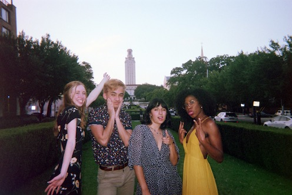
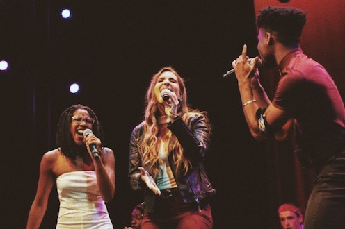
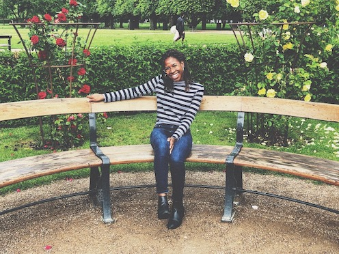

scroll down to learn more about me
About
My Story
At the age of 8, on a Saturday afternoon, I found myself, young, curious, overly enthusiastic and hyper focused on the chords my older cousin, Tony, was playing on the piano. After each chord, I would blurt or even screech out notes. Painfully, I would sing through the chromatic scale until I found a pitch that matched his voice. Despite my efforts, due to my complete lack of music theory knowledge and concept of pitch, my young self could only erupt with laughter each time we would sing together.Now, at the age of 22, still curious and overly enthusiastic about music, I find myself continuing to explore uncharted connections through music and media. Fortunately, while at The University of Texas at Austin completing coursework for a degree in public relations, I was able to gain knowledgeable insight through the lense of media, music and communication. Visit my Instagram
Prior to graduating, I worked for Ashley White to gather research for industry clients including Jason Mraz, booked paid events for an Austin award-winning music group and founded the first "Women in Music Business" Panel series at my university. Towards the end of my collegiate career, I served as a PR member on the AAF’s National Student Advertising Competition team that placed 3rd in the state of Texas.
Visit my LinkedInExperiences
Skills
Work
Notably, through my international internship with CoWomen and through serving with organizations such as BossBabes ATX, Texas 4000 for Cancer and One Note Stand ATX, I have gained invaluable skills in the realm of communication.
- Familiar with Client-facing environments
- Proficient in Adobe Illustrator and Photoshop
- Wordpress
- Press Release writing
- Basic Video Editing
- Fundamental HTML & CSS
- Newsletter writing/MailChimp
- Building Media Lists
- Event Planning Download my Resume
Contact
Any questions? Please don't hesistate to reach out!
Email: Djeanpierre23@utexas.edu
Phone:210.577 210.577.2644